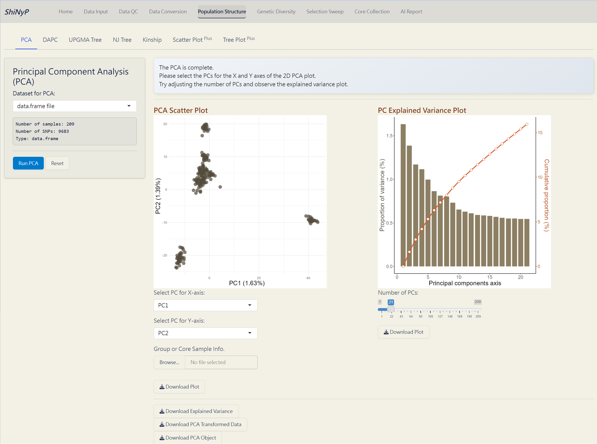

6 Population Structure
➡️ This section contains seven subpages: PCA, DAPC, UPGMA Tree, NJ Tree, Kinship, Scatter PlotPlus, and Tree PlotPlus allowing you to conduct various population structure analyses and customize your plot.

6.1 PCA (Principal Component Analysis)
A widely used method to uncover underlying population structure by reducing the dimensionality of genetic data.
One Step:
- Click the Run PCA button to generate PCA plots and the following downloadable files.
Note: You can upload the Group Info. (from Population Structure/DAPC) or Core Sample Info. (from Core Collection/Core Sample Set) to classify individuals and color them in the PCA Scatter Plot.
Outputs:
PCA Scatter Plot (PDF): A scatter plot showing the distribution of samples based on principal components, with each dot representing an individual.
PC Explained Variance Plot (PDF): Visualizes the variance explained by each principal component.
Explained Variance (CSV): Contains the explained variance of each principal component.
PCA Transformed Data (CSV): Dataset transformed into principal components, with samples as rows and principal components as columns.
PCA Object (RDS): Contains all PCA results for future use and reproducibility, and can be used as input data in the Population Structure/Scatter PlotPlus subpage.

PCA Complete!
6.2 DAPC (Discriminant Analysis of Principal Components)
A multivariate method for identifying and visualizing genetic clusters by combining PCA and Linear Discriminant Analysis (LDA) (Jombart, Devillard, and Balloux 2010). For more information, visit https://adegenet.r-forge.r-project.org/files/tutorial-dapc.pdf.
Step 1: Cluster Identification
- Click the Run DAPC I button to determine the optimal number of clusters (the lowest BIC value indicates the optimal number of clusters).
Note: The default number of PC axes for cluster identification is set to retain PCs that capture up to 80% of the total variance. You can refer the “PC Explained Variance Plot” in the Population Structure/PCA subpage.
Step 2: DAPC Analysis
Choose the number of cluster (K) based on the “Bayesian Information Criterion (BIC) Plot”.
Click the Run DAPC II button to generate DAPC plots and the following downloadable files.
Note: You can download the “DAPC Object” and upload it on Population Structure/Scatter PlotPlus subpage to customize your 2D and 3D scatter plots.
Outputs:
Bayesian Information Criterion (BIC) Plot (PDF): Visual representation of the BIC for model selection.
Density Plot of First & Second Discriminant Function (PDF): Displays the density of the first and second discriminant functions, with each row bar representing an individual.
DAPC Scatter Plot (PDF): A scatter plot showing the distribution of samples based on discriminant functions (x-axis: first discriminant function; y-axis: second discriminant function), with each dot representing an individual.
DAPC Membership Probability Plot (PDF): Visualizes membership probabilities of individuals in different groups, with each row bar representing an individual.
DAPC Group Info. (CSV): Contains the group assignments for each individual based on DAPC. This file used in various subpages.
DAPC Transformed Data (CSV): Dataset transformed into discriminant functions with samples as rows and discriminant functions as columns.
DAPC Object (RDS): Contains all results from the DAPC analysis for future reproducibility. It can be used as input data in the Population Structure/Scatter PlotPlus and Core Collection/Core SNP Set subpages.

DAPC Complete!
6.3 UPGMA (Unweighted Pair Group Method with Arithmetic mean) Tree
A classic approaach for constructing rooted trees based on genetic distance data. UPGMA tree is generated by poppr and ggtree packages (Yu et al. 2016; Kamvar, Tabima, and Grünwald 2014).
Steps:
Choose the number of bootstrap replicates, which will be used for assessing the confidence of the branching structure.
Click the Run UPGMA button to generate tree plot.
Note: You can download the “UPGMA Object” and upload it on Population Structure/Tree PlotPlus subpage to customize your phylogenetic tree.
6.4 NJ (Neighbor-Joining) Tree
A method for building unrooted trees using genetic distance data. NJ tree is generated by ape and ggtree packages (Paradis and Schliep 2018; Yu et al. 2016).

6.5 Kinship Analysis
A statistical method for assessing genetic relationships and relatedness among individuals based on shared alleles (Kang et al. 2010). Kinship matrix is generated by statgenGWAS package.For more information, visit https://rdrr.io/cran/statgenGWAS/man/kinship.html.
Steps:
Upload Group Info. from Population Structure/DAPC (optional). If uploaded, the order of samples will follow the group assignment; otherwise, it will follow the order of the original VCF data.
Choose a method to run kinship analysis.
Click the Run Kinship button to generate the kinship matrix.
Outputs:
Kinship Matrix Plot (PDF): A visual representation of the kinship matrix.
Kinship Matrix (RDS): Contains the kinship matrix data.
Note: This kinship matrix can be directly used as input for GAPIT package in genome-wide association studies (GWAS), helping to control for confounding effects.

Kinship Analysis Complete!
6.6 Scatter Plot Plus
Customize your scatter plot based on the results from Population Structure/PCA or Population Structure/DAPC.
Required Files:
- PCA Object (PCA_prcomp_Object.rds file) or DAPC Object (DAPC_dapc_Object.rds file)
- Group and Other Info. (modifiable from DAPC_Group_Info.csv)
Note: You can add more information about samples by adding new variables to the Group Info. file. Ensure that the sample order remains unchanged.
▼ Example of Group Info. file (CSV).

Steps:
Upload PCA or DAPC Object (RDS)
Upload Group and Other Info. (CSV)
Click the Run Scatter Plot button to generate the 2D and 3D interactive scatter plots.
Customize the scatter plot and click the Run Scatter Plot button again.
Note: The scatter plots are downloaded as HTML files and can be opened with browsers like Chrome or Edge.
6.7 Tree Plot Plus
Customize your phylogenetic tree plot based on the results from Population Structure/UPGMA or Population Structure/NJ.
Required Files:
- UPGMA Object (UPGMA_phylo_Object.rds file) or NJ Object (NJ_phylo_Object.rds file)
- Group and Other Info. (modifiable from DAPC_Group_Info.csv)
Note: You can add more information about samples by adding new variables to the Group Info. file. Ensure that the sample order remains unchanged.